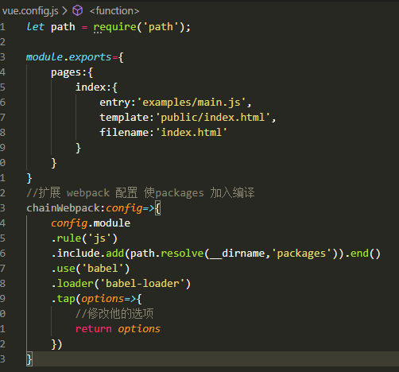
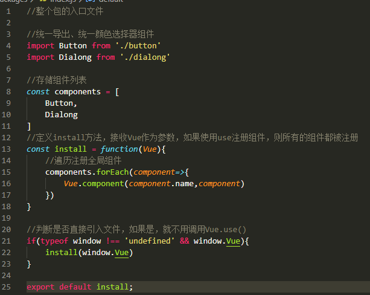
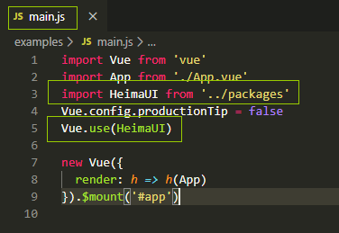
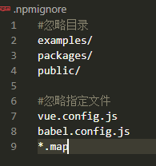

1、初始化一个vue项目
vue create XXX 选择Manually select features ---> 选上 Babel Linter / Formatter CSS Pre-processors
---> 选择 Sass/SCSS(with node-sass) ---> 选择 ESLint + Standard config ---> 确定 ---> In package.json --->选择no
（参照elementUI）在项目目录下新建packages文件夹。（用于存放所有的组件，最终目的就是将packages文件夹打包）将src文件夹改名为examples。（用于进行测试）
这样原来的项目将无法正常启动，因此，在项目根目录下新建一个vue.config.js配置文件（用于配置vue的配置文件）,配置如下：
将写好的vue样式组件放到packages文件夹下，再在packages文件夹下新建一个index.js文件（用于整个插件库包的入口），配置如下：
然后在main.js文件中引入如下图：



构建成库，首先在 packages文件中scripts配置下新加一条命令 "lib":"vue-cli-service build --target lib packages/index.js" packages/index.js为指定打包文件入口
执行 yarn lib 就会打包出dist文件夹了,然后将packages.json文件夹下private改为false,新加"main":"dist/wyj-button.umd.min.js"配置，后面的名字是打包生成的文件的名字的路径
新建.npmignore文件，配置如下：

上传：npm login
输入：username password email
执行：npm publish
删除某个版本：npm unpublish z-tool@1.0.0
删除整个npm市场的包：npm unpublish z-tool --force
*注意：每次上传己得版本要升级
在新项目中安装好，在main.js中当插件使用就好了 import XXX from 'wyj-button' import 'wyj-button/dist/wyj-button.css' Vue.use(XXx)
未完待续~~~